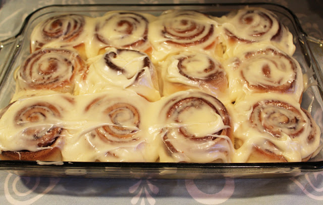

Homemade Cinnamon Rolls
Makes 12 rolls
Modified from here
INGREDIENTS
For the Dough
2 1/2 tsp dry active yeast
1 cup warm milk
1/2 cup granulated sugar
1 tsp salt
2 large eggs
1/3 cup butter, melted
4 1/2 cup bread flour
For the Filling
1/3 cup butter, softened
1 cup brown sugar
3 tbsp cinnamon
For the Frosting
3oz cream cheese, softened
1/4 cup butter, softened
1 1/2 cups powdered sugar
1 tsp vanilla extract
Pinch of salt
DIRECTIONS
Put the warm milk in a large mixing bowl. Add in the yeast, sugar and salt. Mix well and set to one side for 5 minutes.Add in the eggs and whisk together. Make sure the butter has cooled a little, pour into the mixture and whisk well.
Put in the flour all at once and bring together to make a shaggy dough. Pour out onto a clean, floured counter. Knead the dough until smooth, about 5-10 minutes.
Put the dough into an oiled bowl, cover and place into a warm area until doubled in size - about an hour and a half.
When the dough has doubled in size, remove from the bowl and tip out onto a floured work surface. Roll the dough into a 16 x 21 inch rectangle.
Spread the softened butter over the rolled out dough.
In a medium mixing bowl mix together the brown sugar and cinnamon. Sprinkle the cinnamon sugar mix over the dough.
Roll the dough up along the long edge. Cut the roll into 12 rolls.
Place the rolls into a greased 13 x 9 inch pan and place in a warm place to double in size again - about 30 minutes.

Preheat the oven to 400 °F.
Bake the rolls until golden brown, about 15 minutes.
While the rolls are baking, make the frosting by beating together the cream cheese, butter, powdered sugar, vanilla extract and salt.
When rolls are done, remove from oven and leave to cool for a few minutes before spreading the frosting onto the still warm rolls.
Enjoy!
PRINT RECIPE